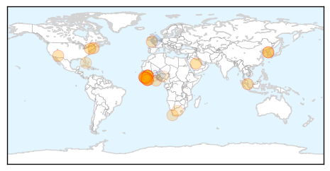
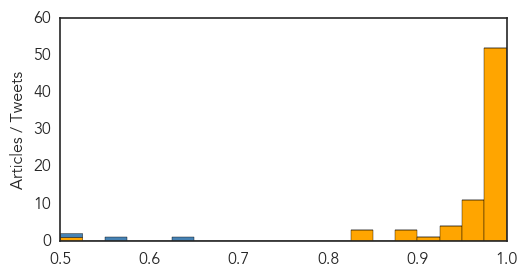

Ebola
30-Day Web Trend
0 alerts, 0 warnings

30-Day Twitter Trend
0 alerts, 0 warnings
Article Locations
Article Confidences

Top Articles:
- 0.998
- 'We are still making the same mistakes,' MSF
- 0.998
- Another Ebola flare-up possible
- 0.997
- French hospital hit by second Ebola scare
- 0.997
- 'Ebola could hit again and we would hardly do better'
- 0.997
- Ebola could hit again and we would hardly do better, says MSF head
- 0.996
- Ebola Spikes again in Guinea, Sierra Leone — Naharnet
- 0.996
- PH still not ready for viral contagion
- 0.995
- As Others See It: Fighting a disease outbreak, again
- 0.991
- MERS outbreak: 3 lessons Canada learned from SARS
- 0.990
- Second French patient admitted to hospital with suspected Ebola in a week
- 0.989
- French hospital hit by second Ebola scare
- 0.985
- Singapore nurse joined fight against Ebola, Singapore News & Top Stories
- 0.985
- Ebola can linger in the eyes of survivors, Aussie researcher finds
- 0.979
- Stigma leaves Liberia’s Ebola workers high and dry
- 0.970
- ACT Alliance Appeal: Post-Ebola Recovery Program in Liberia
- 0.966
- Monkeying around with an Ebola vaccine
- 0.951
- Doctor who fought Ebola inspires Academy of Notre Dame grads
- 0.892
- Ebola survivor Nancy Writebol is returning to Liberia
- 0.870
- Researchers link Ebola news coverage to public panic using Google, Twitter data
- 0.860
- Ebola in Sierra Leone: 'Remind people not to forget about us, the survivors'
- 0.845
- Queen Honours British Citizens who turned Ebola Heroes in Sierra Leone
- 0.828
- Sailors from RNAS Culdrose in Helston to receive medals for fight against ebola in Sierra Leone
- 0.796
- A Call to Scale-Up Community Health Workers
- 0.750
- Parliament Ratifies Public Emergency Regulations for Another 90 Days
- 0.727
- Ebola nightmare haunt Motswana hero
- 0.640
- President Sirleaf Applauds Russia on Russia Day
- 0.621
- Sirleaf confident in Liberia’s growth post Ebola
- 0.587
- WTVM.com-Columbus, GA News Weather & Sports
- 0.523
- Connecticut city settles Ebola lawsuit for $30,000
Top Tweets:
- 0.975
- MERS vs Ebola: Similarities and differences - CCTV http://t.co/LpKgt89kxJ ebola EVD
- 0.949
- Is Ebola flaring up again in West Africa? - Healthcare Global http://t.co/0m56zYaluz ebola EVD
- 0.942
- Freetown Market Traders: “Business Was Difficult For Us During Ebola ... - Ebola Deeply http://t.co/hghuiUxHjY ebola EVD
- 0.856
- Ebola bounces back in Guinea, Sierra Leone: Health authorities repeating mistakes in fight, says MSF http://t.co/MF14JSHDEx AUsummit
- 0.854
- Ebola survivor Nancy Writebol is returning to Liberia - Daily Mail http://t.co/IcMs4uzLIO ebola EVD
- 0.828
- Battling barriers in Ebola vaccine - The University of Hawaii Kaleo http://t.co/EHlPUPuJen ebola EVD
- 0.808
- Ebola Virus Spreading From Escaped QuarantinePatients and BurialRituals http://t.co/L4mux05mAj via
- 0.742
- MAP. Kambia, Sierra Leone, Forecariah, Guinea: Ebola Confirmed Villages for the last 21 days, June 11, 2015 https://t.co/bSlnSQz28k
- 0.740
- Last Ebola health worker infections in Guinea, SierraLeone reported on 6 April & 14 May respectively EbolaResponse http://t.co/DMRZjHHzD7
- 0.733
- Ebola could hit again and we would hardly do better, says MSF head - Fox News http://t.co/k9ldwxAURe ebola EVD
- 0.676
- MERS vs Ebola: Similarities and differences - CCTV http://t.co/uPT6qdMY37
- 0.635
- Federal money will help Washington state prepare for Ebola, other diseases - Puget Sound Business ... http://t.co/NRUcSiUcdY ebola EVD
- 0.629
- 15 June news overview on avianflu avianinfluenza Ebola EbolaResponse MERS http://t.co/DhHPdIeJIA
- 0.627
- Video. Gettingtozero ebola https://t.co/O926xLmpn7
- 0.579
- RT: Since the start of the outbreak 2,449 patients have recovered from Ebola in centres. Great partners, great work http://t.…
- 0.566
- Ebola: La phase finale de la lutte contre une épidémie est toujours la plus difficile http://t.co/nvPXoFSVoD
- 0.522
- RT: Ebola: La phase finale de la lutte contre une épidémie est toujours la plus difficile http://t.co/nvPXoFSVoD
- 0.518
- Since the start of the outbreak 2,449 patients have recovered from Ebola in centres. Great partners, great work http://t.co/1uOFJvCbwT
MERS
30-Day Web Trend
25 alerts, 2 warnings
30-Day Twitter Trend
17 alerts, 0 warnings
Article Locations

Article Confidences
Top Articles:
- 1.000
- MERS: no reason to stay home
- 1.000
- Prepare for Spread of MERS-CoV, Says CDC
- 1.000
- Alert Over Middle East Respiratory Syndrome
- 1.000
- South Korea MERS outbreak: 19 deaths confirmed, 154 infected
- 0.999
- Limlingan: The MERS-CoV again
- 0.999
- MERS Not Given Same Vaccine Attention as Ebola, Other Viruses
- 0.999
- MERS: understanding the mysterious virus
- 0.999
- Hospital at center of South Korea's MERS outbreak suspends services; 7 new
- 0.999
- Mers death toll rises to 16 in South Korea outbreak
- 0.999
- MERS: Cases in South Korea rise to 150; death toll rises to 16 since outbreak began in May
- 0.998
- Health and travel advice for Hajj and Umrah updated in light of MERS
- 0.998
- South Korea MERS deaths rise to 16
- 0.998
- South Korea Hospital Identified As Major Source Of MERS Cases
- 0.998
- Nigerian National Security Adviser issues alert over virus
- 0.998
- South Korea continues to battle MERS outbreak
- 0.997
- Editorial: Caution and preparedness
- 0.997
- Sector Updated on MERS-CoV
- 0.997
- Sector updated on Middle East Respiratory Syndrome Coronavirus
- 0.997
- Curbing MERS-CoV in Korea to take weeks – WHO
- 0.997
- Death Toll Rises to 16; More Cases Detected
- 0.997
- S Korea reports two more MERS deaths, five new cases
- 0.997
- Korea ‘large and complex’ MERS outbreak grows to 150 cases, 16 deaths
- 0.996
- NZ 'well prepared' for MERS
- 0.996
- MERS-CoV deaths rise with few drugs in pipeline
- 0.996
- What are we doing to battle respiratory virus?
- 0.996
- South Korea MERS death toll rises to 16, 150 cases confirmed
- 0.996
- South Korea to keep expansionary policy; MERS effect limited for now
- 0.996
- Hospital at Center of South Korea's MERS Suspends Services; 7 New Cases
- 0.995
- Exchange Students in Korea Kicked-out for Wearing Masks against MERS; Korean Citizens Low on Awareness? : Trending News : Venture Capital Post
- 0.995
- Schools reopen as South Korea seeks normality amid MERS outbreak
- 0.995
- Pinoy in Riyadh has MERS-CoV; Malacañang says PH still virus-free
- 0.995
- WHO Confirms Confinement of Virus Within Hospitals
- 0.995
- Czech Republic not to take measures against MERS at present
- 0.995
- MERS virus in Slovakia
- 0.994
- Another Filipino tested positive for MERS-CoV
- 0.994
- Czech Republic not to take measures against MERS at present
- 0.994
- MoH: Local Treated in Miri Confirms Negative from MERS-CoV
- 0.993
- Europe Fears Spread As Man Undergoes Tests In Slovakia
- 0.990
- Vaccine firms ready to contain MERS-CoV
- 0.989
- Schools reopen as South Korea seeks normality amid MERS outbreak
- 0.988
- Americans are unlikely to contract MERS, health experts say
- 0.987
- South Korea Fights To Contain Outbreak, As Saudi Arabia Reports New Cases
- 0.987
- Coronavirus importation threat exists, no reason to panic - Rospotrebnadzor
- 0.983
- Schools reopen as South Korea seeks normality amid MERS outbreak
- 0.983
- Schools reopen as South Korea seeks normality amid MERS outbreak
- 0.983
- Nigeria raises alert on threat of MERS
- 0.982
- Schools reopen in South Korea as president urges return to normality amid Mers outbreak, East Asia News & Top Stories
- 0.982
- Schools reopen in South Korea as president urges return to normality amid Mers outbreak, East Asia News & Top Stories
- 0.982
- Pinoys in Korea still MERS-free – DOLE
- 0.978
- Phuket on alert for the MERS virus , news, Health News, AsiaOne YourHealth
Showing top 50 articles...
Top Tweets:
- 0.642
- RT: WHO Director-General is convening the 9th Meeting of the Emergency Committee on MERS-CoV under International Health Regulations, …
- 0.567
- MERS-CoV has spread from ill ppl to others through close contact, such as caring for or living w/ infected person
- 0.545
- AFD Blog `Saudi MOH: Another MERS Case In Hofuf ' MERS-CoV http://t.co/dyqS8t2VVJ
- 0.510
- RT: S. Korea -Gov announces 5 new coronavirus MERS cases, 2 deaths: total cases=150, total deaths=16 - June 14, 2015 https:…